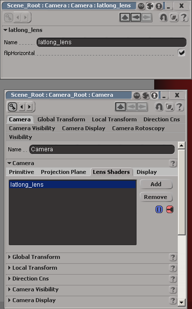
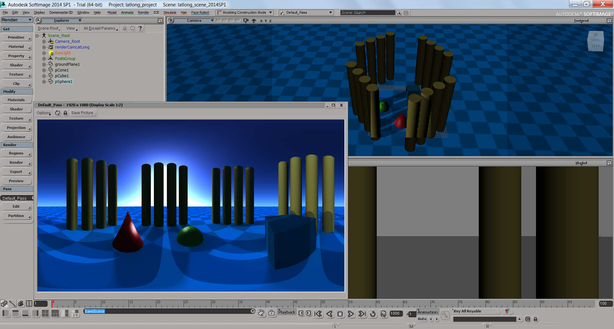

LatLong_lens shader for Softimage x64Jan 12, 2014 - Version 2.1
The original latlong_lens shader was written by Ralf Habel
ralf.habel@vi-motion.de
Softimage port by Andrew Hazelden
andrew@andrewhazelden.com
http://www.andrewhazelden.com/blog
This package includes the Windows x64 and Linux x64 builds of the latlong_lens mental ray shader for Softimage. The latlong_lens shader is designed to render equirectangular images. The shader can be used to create panoramic images with a single click of the render button.
The latlong_lens shader is included in the Domemaster3D Softimage Addon.
After you install the shader you need to restart Softimage so the shader is loaded into mental ray. If you don't restart Softimage after installing the shader you will get a "shader not found error".
On Windows the Microsoft Visual C++ 2010 Redistributable Package (x64) is required. If you don't have the Microsoft Visual C+ 2010 library installed on your computer Softimage will render a black frame or crash when you click render.
http://bit.ly/VisualC_2010_Redistributable_x64
To use the latlong_lens shader, open your the camera's property window. Click on the "Lens Shaders" tab and click the "Add" button to create a new lens shader. In the pop-menu select "latlong_lens".
It is possible to mirror the rendering by enabling the lens shader's flipHorizontal attribute.

The best equirectangular image output is from rendering with a 2:1 aspect ratio. (Like a 2048x1024 pixel or 4096x2048 pixel output)
A sample softimage 2014 project file is included. This scene can be used to test the latlong_lens shader installation.

For more information about the x64 builds of the latlong_lens shader check out the blog page: